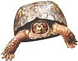

March to May 1997 sky locations of
Hale-Bopp and bright solar system
objects an hour after sunset at 40°
N. Tail lengths are fairly
speculative. (10' is the width of
your fist held out at arm's length.)